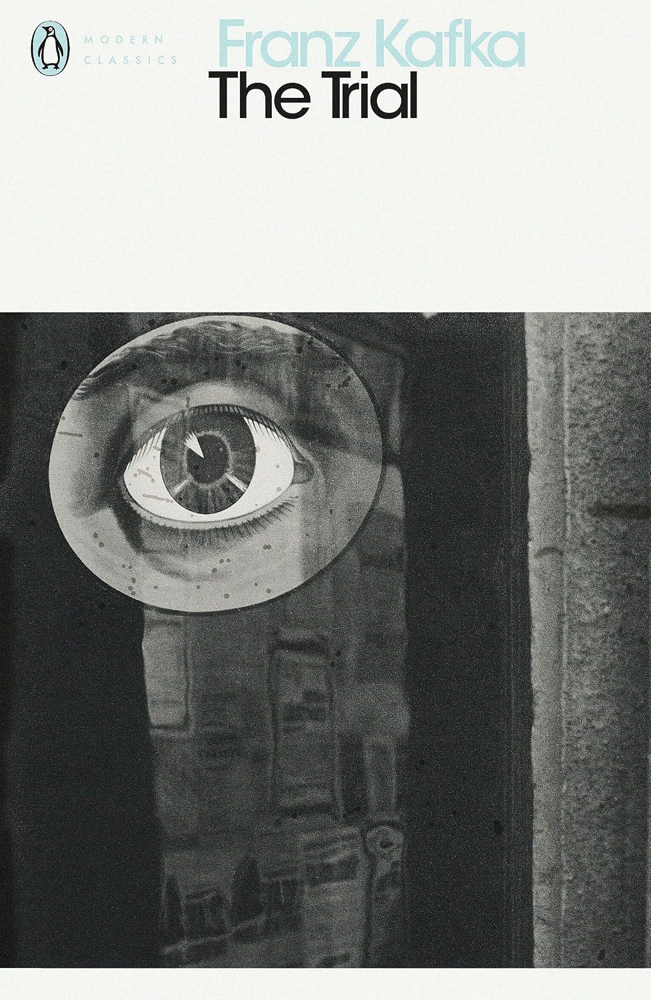

Dit boek had ik vorige maand gelezen, het stond al een tijdje in mijn boekenkast en ik dacht het was een goed moment om het boek te lezen. Het duurde mij ongeveer een maand om het boek volledig te lezen en ik heb heel veel meningen over deze boek.
Het boek heeft een hoofd personage 'genaamd Josef K.' op het begin van het boek hij werd gearresteerd door een corrupte politie. Later op het boek krijgen we de conclusie dat het hele concept van het boek gaat over corruptie binnen grotere machten in de samenleving.
Het boek is een heel dens boek dat kan worden moeilijk en langzaam om te lezen, speciaal omdat de hoofdstukken kunnen heel lang duren.
Wat het boek heeft we heel goed gedaan zijn de personages. Elk hoofdstuk breng altijd een nieuwe personage met een interessante achtergrond en ook waardevol informatie voor Josef K..
Mijn favoriete hoofstuk van het boek zou zijn "The Painter", er wordt een kunstenaar gepresenteerd in het verhaal die wilt Josef K. helpen met zijn Rechtzaak en hij geeft durende de hoofdstuk advies en connecties die hem kunnen helpen om te ontstappen van het corrupte rechtszaak systeem dat de wereld van het boek heeft.